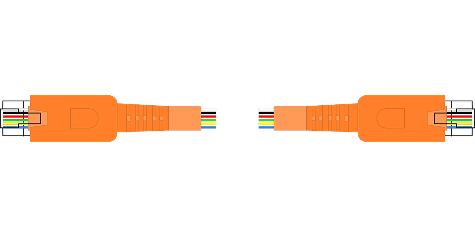
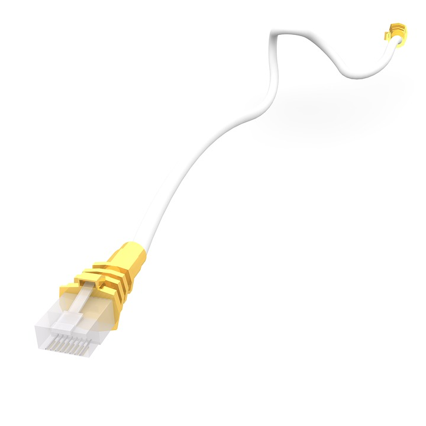
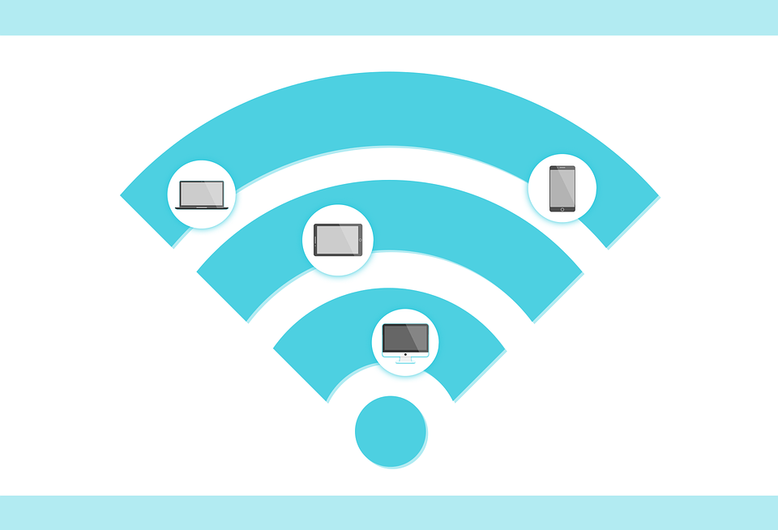
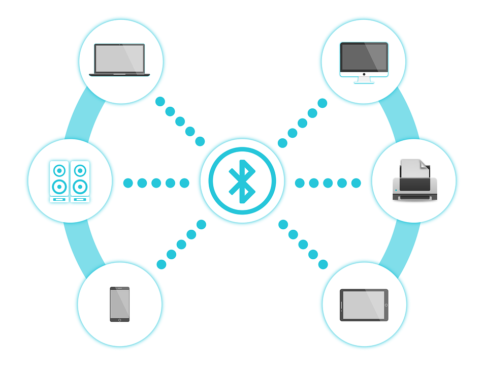
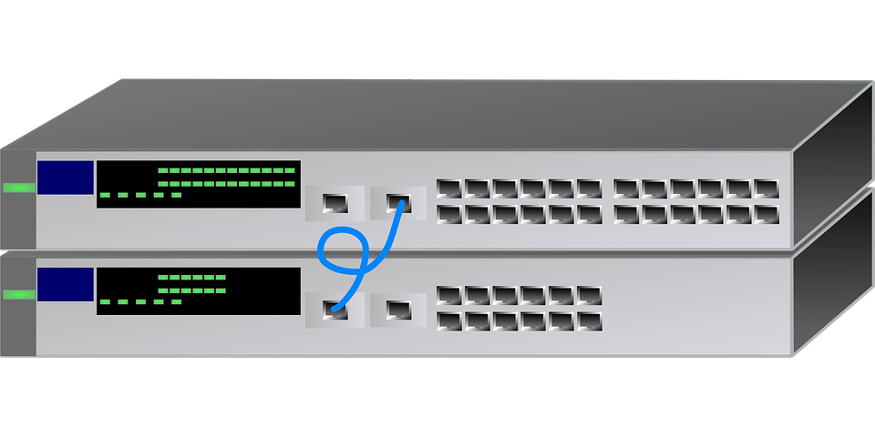
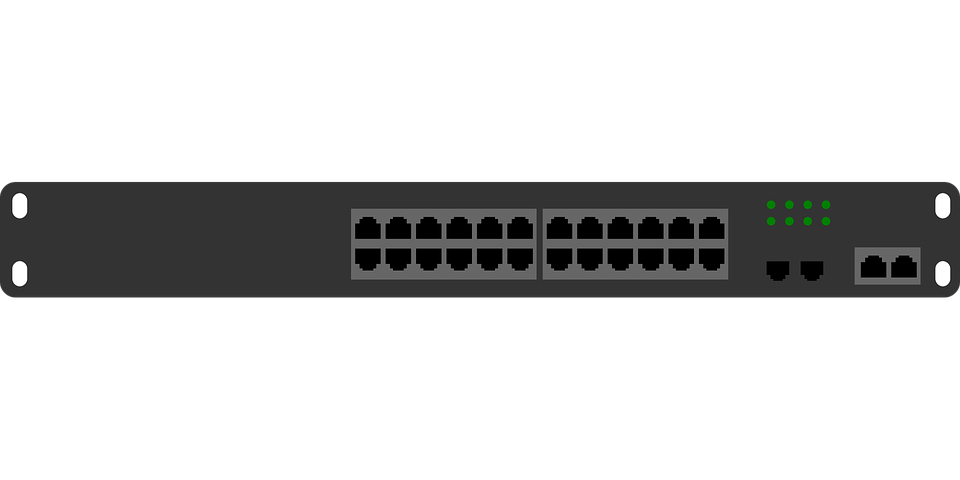
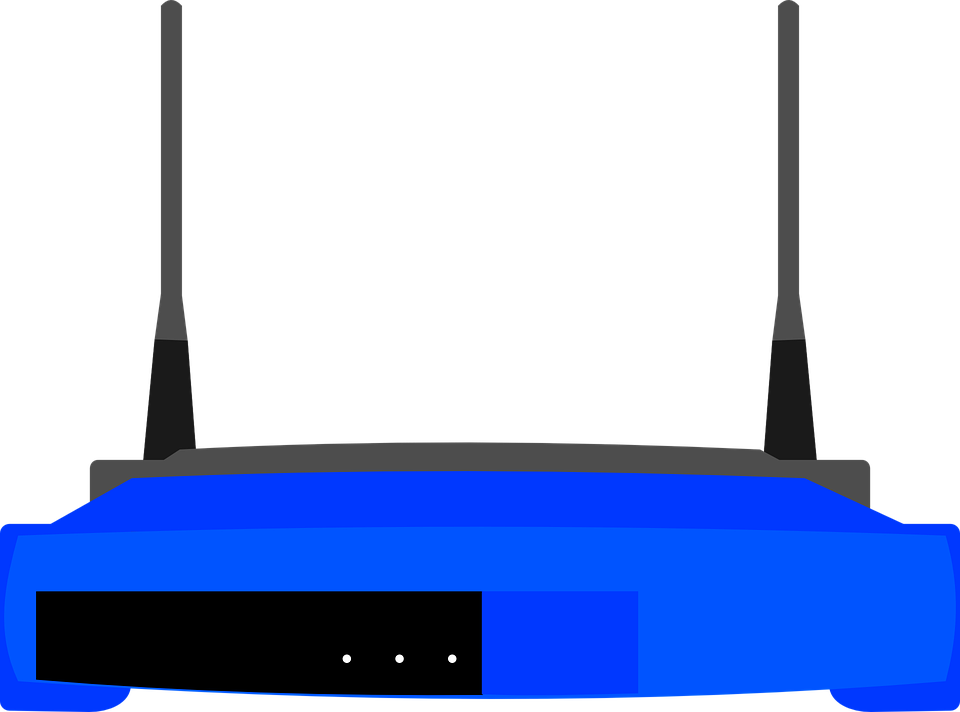

Рачунарске мреже. Употреба ИКТ уређаја на одговоран и сигуран начин у мрежном окружењу.¶
- На овом часу ћемо говорити о:
рачунарским мрежама;
предностима умрежавања ИКТ уређаја у рачунарску мрежу;
начинима повезивања ИКТ уређаја у рачунарску мрежу;
подели рачунарских мрежа;
интернет протоколима, адресама и доменима;
одговорном и правилном коришћењу ИКТ уређаје у мрежном окружењу.
Људи су одувек имали потребу да комуницирају међусобно. Начин комуникације се временом мењао онако како су се мењале технологије. Са појавом писма писане поруке су се размењивале најпре тако што су их носили курири, а затим и поштом. Са појавом телефона стекла се могућност да људи комуницирају усмено, гласовним порукама на великим удаљеностима путем телефонских линија. Савремене технологије омогућиле су другачији начин комуникације коришћењем ИКТ уређаја (рачунара, мобилних телефона, таблета…) и коришћењем различитих апликација за комуникацију. Да би та комуникација била могућа, ИКТ уређаји морају бити међусобно повезани. Међусобно повезани ИКТ уређаји чине рачунарску мрежу. За уређај који је повезан у мрежу каже се да је умрежен. У почетку су у рачунарску мрежу били повезани само рачунари, те отуда и назив рачунарска мрежа. Са развојем технологије многи други уређаји су добили могућност да се повежу у мрежу, попут паметних мобилних телефона, таблета, телевизора, паметних сатова, па чак и веш машина, фрижидера и других кућних уређаја. На тај начин се може управљати умреженим уређајима из даљине преко апликација на другом умреженом уређају, рачунару или мобилном телефону.

Предности рачунарских мрежа¶
- Повезивање ИКТ уређаја у рачунарску мрежу има низ предности. Неке од њих су следеће:
дељење информација
комуникација
дељење садржаја (нпр. на друштвеним мрежама)
заједничко коришћење онлајн програма (нпр. рад у дељивом документу)
дељење хардвера (нпр. заједничко коришћење једног штампача у канцеларијском пословању)
могућност играња рачунарских игрица у мрежном окружењу
Можемо закључити да нам рачунарске мреже омогућавају брзим преносом података размену порука и садржаја, заједничко коришћење софтвера и хардвера и тимски рад, што повећава ефикасност у комуникацији и пословању смањујући трошкове. Подаци су смештени на једном месту, лакше је њихово одржавање и заштита, а може им се приступити са удаљених локација. Подаци, програми и компоненте хардвера које ИКТ уређаји деле у мрежи називају се једним именом ресурски рачунарске мреже.
{kind=link}
Начини повезивања рачунарских мрежа¶
- ИКТ уређаји се могу повезати у мрежу на два начина:
жичано (wired)
бежично (wireless)
У почетку се за умрежавање рачунара користила постојећа инфраструктура односно иста врста каблова који су се користили за преношење телефонског и телевизијског сигнала.
 {kind=link}
{kind=link}
Данас се користи посебна врста мрежних каблова за умрежавање ИКТ уређаја, а савремени ИКТ уређаји све више се повезују бежично у рачунарску мрежу путем радио, wifi или bluetooth сигнала.
 {kind=link}
{kind=link}
Поред каблова постоји још низ уређаја за повезвање ИКТ уређаја у рачунарску мрежу, као што су мрежна картица, која служи за повезивање рачунара на остале мрежне уређаје, затим модем, свич, рутер и остали мрежни уређаји.
  {kind=link}
{kind=link}
{kind=link}
Подела рачунарских мрежа¶
- У зависности од тога где се налазе и колико су удаљени ИКТ уређаји који су повезани у мрежу, рачунарске мреже можемо поделити на:
Личне рачунарске мреже - PAN (Personal Area Network) у којима су повезани ИКТ уређаји у једној просторији на удаљености од неколико метара, нпр. десктоп рачунар, лаптоп, паметни телефон, штампач.
Локалне рачунарске мреже - LAN (Local Area Network) у којима су повезани ИКТ уређаји у оквиру једне или више зграда на површини до 10km, нпр. у школској згради, на универзитету, у болници, општини итд. Њих карактерише велика брзина преноса података између уређаја унутар мреже (од 10 Mbps до 1 Gbps) и одсуства потребе за телекомуникационом линијом јер се уређаји повезују мрежним кабловима или бежичном везом (wireless).
Градске рачунарске мреже - MAN (Metropolitan Area Network) представљају рачунарске мреже на територији одређене географске области, великог града или округа на растојању до 100km.
Мреже ширег подручја - WAN (Wide Area Network) су рачунарске мреже које покривају територију једног региона, државе или континента на растојању до 10000km. Подаци у овим мрежама се размењују посредством телекомуникационих линија (телефонских линија, оптичких каблова и бежичних веза) и пренос података је спорији од преноса у локалној мрежи.
Глобална мрежа - INTERNET (INTERnational NETwork) повезује све претходно поменуте мреже у јединствену целину и представља светску рачунарску мрежу.
{kind=link}
{kind=link}
- У зависности од улоге коју поједини ИКТ уређаји имају у мрежи и начина како користе заједничке ресурсе, рачунарске мреже се могу поделити на:
мреже равноправних уређаја која се још назива “од чвора до чвора” (peer-to-peer, P2P);
клијент-сервер мреже (client-server).
У мрежама од чвора до чвора сви ИКТ уређаји у мрежи су равноправни, имају исту улогу и могу да деле ресурсе мреже са другим уређајима у мрежи. У оваквој мрежи сваки ИКТ уређај поседује податке или програме потребне другима, али може и да тржи податке или апликације које други ИКТ уређаји поседују. Оваква мрежа равноправних уређаја обично има мање од десет рачунара који се налазе најчешће у истој просторији или згради и одржавају се појединачно.
У клијент-сервер мрежама један рачунар је главни и на њему се налазе ресурси рачунарске мреже - подаци, програми, прикључени уређаји и приступ интернету, које користе сви остали рачунари у мрежи. Тај главни рачунар се назива сервер и обично су сервери рачунари бољих перформанси, са бржим процесором, хард диском већег капацитета и располажу великом РАМ меморијом, а како раде без престанка потребно је да буду прикључени на уређај за беспрекидно напајање - UPS (Uninterruptable power supply), систем чији је основни задатак да обезбеди несметано електрично напајање потрошача. Остали рачунари у мрежи се називају радне станице или клијенти, обично су слабијих хардверских перформанси и користе ресурсе мреже који се налазе на серверу.

Интернет протоколи, адресе и домени¶
У историји развоја рачунарских мрежа најпре је дошло до формирања више локалних рачунарских мрежа у универзитетским центрима у Америци и Европи. Међутим, рачунари су могли да комуницирају само са рачунарима у оквиру исте мреже, јер је свака од тих мрежа имала сопствена правила за комуникацију па нису могли да се повежу са другим рачунарским мрежама. Скуп тих правила и поступака који се примењују при преносу података између умрежених уређаја назива се протокол. Њиме се обезбеђује да се подаци који се шаљу са изворног ИКТ уређаја на одређени начин декомпонују и шифрирају, шаљу, преносе и примају чиме се обезбеђује да подаци на пријемној страни буду исти као и они који се шаљу без грешака. Можемо рећи да протокол представља језик којим се ИКТ уређаји споразумевају у рачунарској мрежи. Због тога све док није успостављен један једниствени протокол који важи на глобалном нивоу, постојање интернета као светске мреже није било могуће. Са успостављањем протокола TCP/IP (Transmission Control Protocol / Internet Protocol) дошло је до повезивања постојећих локалних и регионалних рачунарских мрежа и до формирања интернета. TCP/IP представља скуп више протокола који одређују како се подаци на интернету шаљу, преносе и примају. Постоји низ других протокола, а један од њих који свакодневно користимо је протокол HTTP (HyperText Transfer Protocol) као и HTTPS (HyperText Transfer Protocol Secure). Ови протоколи су мрежни протоколи који данас представљају главни и најчешће коришћени метод за пренос информација на интернету и приказ интернет страница по принципу захтева и одговора. Протокол HTTP служи за комуникацију између два рачунара од којих је један сервер на коме су смештени тражени подаци, а други је клијент, рачунар са инсталираним интернет прегледачем. Протокол HTTPS је варијанта протокола HTTP који обезбеђује безбедну комуникацију између сервера и клијента заштићену од прислушкивања.
Сваки умрежени уређај има своју физичку (хардверску) ознаку која се назива MAC адреса (Media Access Control Address) и представља јединствени број помоћу кога се препознаје уређај у локалној мрежи. MAC адреса се уређајима задаје као стална и садржи информацију о типу произвођача и серијски број а наводи се као низ хексадецималних бројева (бројева са бројном основом 16 који поред 10 цифара садрже и 6 словних ознака - A, B, C, D, E, F).
Да би умрежени ИКТ уређаји могли међусобно да комуницирају и размеђују податке неопходно је да сваки ИКТ уређај у мрежи има јединствену ознаку по којој ће бити идентификован. Та ознака је представљена нумеричком адресом која се назива IP адреса (Internet Protocol address). IP адреса је јединствена што значи да не могу два ИКТ уређаја у мрежи да имају исту IP адресу. IP адресе се записују у бинарном запису помоћу цифара 0 и 1. За записивање IP адресе потребно је 32 бита, нпр. 11000000 10101000 00000001 10011000. Да би људи могли лакше да памте и манипулишу IP адресама оне се записују са четири броја у декадном бројном систему тако што се 32-битна IP адреса дели на четири дела, а сваки од њих се представља бројем од 0 до 255. Тако 11000000.10101000.00000001.10011000 постаје 192.168.1.152 у декадном запису. На овај начин могу да се адресирају више од четири милијарде различитих ИКТ уређаја у мрежи. IP адресе се не додељују насумично већ постоје одређена правила за њихово додељивање, а могу бити статичке, када су непроменљиве за један уређај, и динамичеке, када се при сваком повезивању у мрежу додељује другачија IP адреса. Како је људима тешко да памте нумеричке адресе, за IP адресе користе се мнемоничке адресе које представљају комбинацију слова и цифара. Такве адресе се називају веб-адресе. Тако веб-адреса сајта Google је google.rs а IP адреса сервера на коме је тај сајт смештен је 172.217.6.35. Било да у адресном пољу интернет прегледача укуцамо веб-адресу или IP адресу резултат ће бити исти, добићемо почетну страницу Google сајта. Да би овакав начин адресирања био изводљив уведен је интернет сервис Систем интернет домена (Domain Name System - DNS) који претвара мнемоничку адресу у IP адресу.
Интернет домен је јединствена текстуална ознака која се додељује одређеној локацији на интернету (скупу уређаја, сервера или интернет сервиса, веб-сајтова итд.). Последњи део интернет домена назива се домен највишег нивоа. Ознаке овог домена могу представљати територијалну припадност или врсту институције којој неки домен припада. Па тако имамо двословне ознаке географских домена и обично трословне и четворословне генеричких домена.
- Примери неких географских домена:
.rs - Република Србија
.uk - Уједињено Краљевство
.fr - Република Француска
.it - Република Италија
.nl - Краљевина Холандија
.es - Краљевина Шпанија
.us - Сједињене Америчке Државе.
- Примери неких генеричких домена:
.edu - домен за образовне институције
.org - домен за непрофитне организације, удружења и клубове
.gov - домен државне управе
.com - домен за комерцијалне институције
.info - домен за медијске организације за објављивање информација
.biz - домен за пословне компаније и привредне субјекте
.net - у почетку додељиван искључиво веб сајтовима разних мрежа, а сада услед развоја Интернета, прешао је у масовну употребу и аутоматски начин куповања домена.
Домен edu.rs је део националног домена за образовне институције у Републици Србији. Основни домен може да има своје потцелине које могу да припадају некој другој организацији. Организациона потцелина неког домена назива се поддомен. Тако на пример у ознаци домена osvukkaradzic.edu.rs део osvukkaradzic означава поддомен за основну школу “Вук Караџић”, ознака .edu означава да се ради о образовној институцији а ознака .rs да се она налази у Републици Србији. Од 3. маја 2011. године као актуелни домен највишег нивоа за Републику Србију поред латиничног домена .rs у употреби је и ћирилични домен .срб. То је после руског ћириличног домена други ћирилични домен на свету. Поштујући своја национална писма, одлуку о увођењу националних домена чији називи нису писани енглеском абецедом донело је преко 20 држава до сада међу којима и највеће и најмногољудније земље света које не користе латинично писмо попут Русије, Кине и Индије, као и многе друге арапске и азијске земље.
Интернет адреса представља јединствену текстуалну ознаку везану за одређени домен и може бити URL адреса или адреса електронске поште.
URL адреса (Uniform Resource Locator) назива се и веб-адреса и представља јединствену адресу неког ресурса на интернету, попут појединачне интернет странице, датотеке, сервиса или неког другог ресурса. Састоји се од назива протокола, назива домена, путање до траженог ресурса и назива самог ресурса. Тако на пример на адреси https://pametnoibezbedno.gov.rs/files/file_upload/fajl/8355_Privatnost_brosura-converted.pdf можемо доћи до брошуре са саветима како да сачувате своју приватност на интернету.
- Делови ове адресе су:
https:// - интернет протокол који се користи за приступ и преузимање садржаја
pametnoibezbedno.gov.rs - назив домена сајта “Паметно и безбедно”
/files/file_upload/fajl/ - путања до жељеног документа
8355_Privatnost_brosura-converted.pdf - назив документа - брошуре.
Адреса електронске поште (e-mail address) представља јединствену адресу електронског поштанског сандучета и састоји се од корисничког имена, ознаке @ и назива домена (нпр. info@pametnoibezbedno.gov.rs).